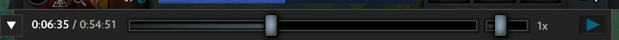
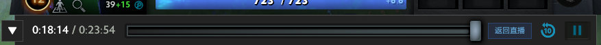
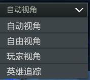

最近在工作中需要实现一个观战系统，不过由于是在 MMORPG 的架构下，所以实现起来有很多不方便，所以来研究一下 dota2 的同步方式，看看为什么 dota2 的观战系统功能如此强大。
# 1. 主要功能
dota2 的录像和观战拥有的功能大致相同，主要是以下几方面：
# i. 进度管理

dota2 的录像可以随意拖拽，可以倍速播放。

观战会进入相比当前比赛延迟 3 分钟的战局，可以拖拽回放。
# ii. 视角选择

dota2 的视角有几种方式：
自动视角，会由客户端根据当前局势自动操控视角。
自由视角，即观看者自己控制视角。
玩家视角，以当前锁定的玩家的第一视角观看比赛，包括玩家的鼠标和切屏操作。
英雄追踪，视角跟随在当前锁定的英雄。
# iii. 其他
除此之外，dota2 的观战还有一些比赛解说、显示 / 隐藏迷雾等的功能，不过实现应该相对比较简单直接，这里不作研究。
# 2. 同步方式
要 dota2 的研究观战系统的实现首先得了解 dota2 的同步方式，这里主要通过 dota2 开发者论坛上的这个帖子 Unit Response Delay。
一开始我以为 dota2 会是使用和王者荣耀一样的帧同步方式，但事实是 dota2 是使用状态同步的方式的。我这样认为主要是因为帧同步在存储录像和给别人观战时，只需要存下每一帧的所有行动着的单位的具体行为就可以了，相比状态同步，帧同步实现观战录像系统的复杂度会降低很多，录像所需的存储空间、观战所需的流量都会少很多。不过由于只记了每一帧的行为，所以不把从开始到当前的每一帧都演算完是没法获得当前这一帧的状态的，倒退操作的实现也会很麻烦，这也可以解释王者的录像和观战为什么没法拖动进度条和回退战局。
帖子中提到，dota2 的服务器会以 50ms 一帧，即 20fps 的频率向客户端发送当前这一帧 “地图上所有单位的位置、状态等”；而客户端则通过前后帧之间的状态差别，推算并演绎地图中发生的事件。比较特别的是，dota2 的客户端中每次推演变化时是根据当前发来这帧和 100ms 前那帧来推演的，按作者的话说是客户端的频率是 10Hz，服务器的一半，但我不知道这个 “频率” 应该怎么理解，因为看作者举的例子客户端每 50ms 收到一帧后还是会推算演绎，只是计算差别的两帧跨了 100ms。以这种方式，假如中间丢了一帧，还可以根据相差 50ms 的一帧去推算行为，从而降低丢包带来的影响。
# 3. 观战系统
了解了 dota2 的同步方式后，便大致猜出它的观战系统和录像功能的实现方法了。
dota2 的观战其实就是就是将同步客户端的每一帧状态同时发送给观战服务器。延迟的话可能是，由观战服务器暂存然后延迟发送给所有观战玩家，也可能是由游戏服务器延迟 2 分钟发送给观战服务器。我个人认为第一种可能性更大，毕竟游戏服务器的性能比观战服务器的性能更重要，暂存在观战服务器的话应该更合理一点。然后对于观战客户端来说就和正常的玩家一样，根据每帧状态差别播放就可以了。不过发送的每一帧中应该还会发送这一帧内玩家的鼠标操作，因为观战还可以查看玩家的操作视角。
那录像的逻辑也就很简单了，只要将转发给观战服务器的每一帧的数据存下来，客户端以相同的方式解析就可以了。
# 4. 总结
dota2 的观战和录像系统确实很强大，我第一次知道能查看选手第一视角时真是惊叹了很久～
不过 dota2 的开发组透露，使用的框架和 Counterstrike，Left 4 Dead，Team Fortress 2 是同一个，这些都是射击游戏，射击游戏的逻辑就是每帧根据鼠标的移动来移动镜头，不记录鼠标移动的话录像就完全没有意义，所以 dota2 记录鼠标移动也就不奇怪了。
但是我们游戏虽然也是状态同步，但 mmorpg 的每个角色属性维度过多，单个玩家单战斗相关的属性数据就有将近 100 项，若是每一帧都把所有单位的状态都同步，数据量会比 dota2 大很多，可能并不适合这种方式。我们最终的处理是创建一个镜像副本，将原副本内的所有广播给周围玩家的消息（即表现相关的详细）同时发送给镜像副本的对应位置，然后将所有玩家拉到这个镜像副本中，并隐藏自己的模型，算是权衡下的一种比较保守的实现方式。